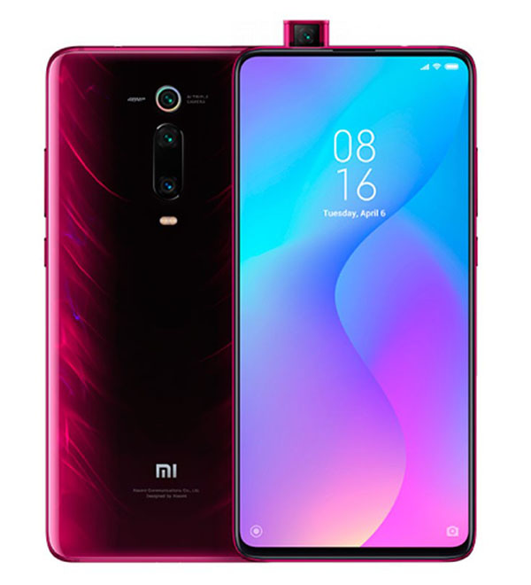

Demuestra tus habilidades con el procesador Snapdragon™ 855. Además, el rendimiento de un solo núcleo
de la CPU es mejorado en un 45%, la velocidad de juego se acelera en un 25% y el rendimiento de la Inteligencia
Artificial se triplica. Justo la velocidad que necesitas.

Aceleración
Para una experiencia de juego óptima, Mi 9T Pro no solo te ofrece un gran hardware, sino también optimizaciones
de software que aumentan enormemente el rendimiento. A través de una profunda optimización, Mi Turbo reduce la fragmentación
de archivos y mantiene su sistema funcionando sin problemas durante un máximo de 18 meses. Mientras tanto, el modo Game Turbo
actualizado da un gran impulso a la sensibilidad y capacidad de respuesta de la pantalla táctil. Por otro lado, también cuenta con
más herramientas como la mejora visual, para que puedas jugar usando tu configuración personalizada.
Enfriamiento
Nuestro diseño de enfriamiento personalizado utiliza 8 capas de grafito en la parte frontal para disipar el calor con
una eficacia de un 650% mayor. En la parte trasera, el gel transmisor de calor, el grafito y el cobre mantienen la CPU
funcionando rápidamente para conseguir una frecuencia de imagen alta y estable en cada batalla
Batería
Además de un gran rendimiento, Mi 9T Pro también cuenta con una gran batería de 4.000 mAh de capacidad y admite carga
rápida QC4+ de 27 W. Eso significa que puedes cargar su batería un 58% en solo 30 minutos.
Camara
Con una lente de ultra alta resolución Sony de 48 MP + teleobjetivo de 8 MP + lente ultra gran angular de 13 MP, podrás
hacer cualquier foto con facilidad. Amplía la imagen de 0,6x a 10x y descubre tu verdadero potencial fotográfico Fotografías de gran angular
de 124,8° con corrección por Inteligencia Artificial para evitar la distorsión de escenas y caras. Presume de tu mundo exactamente como lo ves.
Seguridad
El desbloqueo es ahora más rápido que nunca. La nueva tecnología de reconocimiento de huellas dactilares proporciona lo
último en detección óptica de huellas, expandiento el área fotosensorial en un 100% y utilizando un algoritmo actualizado para
hacer que el desbloqueo sea más rápido, inteligente y seguro.
Caracteristicas
Pantalla:
6.39", 1080 x 2340 pixels
Procesador:
Snapdragon 730 2.2GHz
RAM:
6GB
Almacenamiento:
64GB/128GB
Expansión:
sin microSD
Cámara:
Triple, 48MP+13MP+8MP
Batería:
4000 mAh
OS:
Android 9.0
Perfil:
8.8 mm
Peso:
191 g